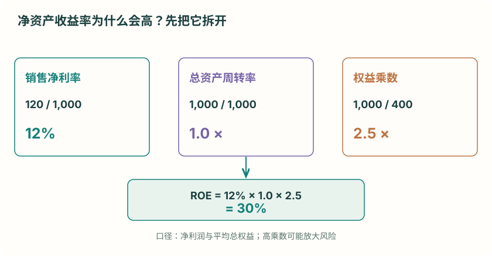
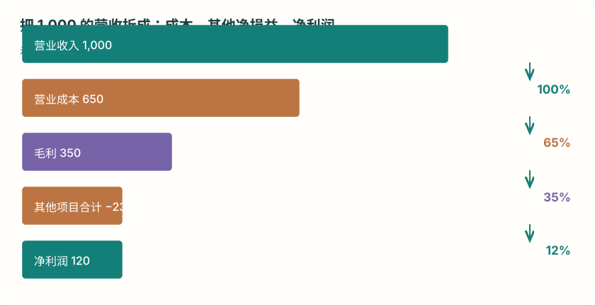

盈利能力分析：从毛利率到 ROE 的真实驱动
两家公司 ROE 都是 30%，一家依靠利润率和资产效率，另一家可能只依靠更薄的权益垫。把利润拆成业务、资产和资本结构，才能判断质量。
净资产收益率越高，盈利质量越好吗？
设一家公司的收入为 1,000 万、营业成本 650 万、净利润 120 万，平均总资产 1,000 万、平均总权益 400 万。毛利率 35%，净利率 12%，ROA 为 12%，ROE 为 30%。如果相同净利润和总资产下，平均权益降到 200 万，ROE 将升至 60%，但公司并没有多创造 1 元净利润；资金来源中负债或其他非权益部分的权重可能更高。
因此，盈利能力有三个问题：每卖出一元收入留下多少利润？每一元资产创造多少利润？股东的资本杠杆又把回报放大多少？这三个层面不能互相替代。

先看毛利与净利的形成
毛利 = 营业收入 − 营业成本。毛利率既受售价影响，也受销量、原材料、销售产品组合和成本结转方法影响。其变化不能自动归结为竞争优势扩大或削弱。净利率则进一步吸收了费用、减值、其他收益、投资损益、所得税等影响，不能由毛利率推断。

例如毛利从 40% 降到 35%，可能是产品降价、低毛利业务占比增加、成本涨价或原来高毛利项目消失。下一步应先看各分部收入与成本，随后核对会计政策及存货成本结转。
ROA、ROE 使用期间流量与平均存量
ROA 的常用口径之一为净利润 / 平均总资产；ROE 可用净利润 / 平均所有者权益。若使用归母净利润，则分母原则上应配套使用平均归属于母公司的权益。年内并购、回购、增资或重大分红会使简单期初期末平均不足以反映全年资本占用，需要更细的时间加权。
右侧三项依次是净利率、总资产周转率和权益乘数。只有采用同一口径的利润、收入和平均资产/权益，乘积才能严格还原 ROE。ROE 为负或权益极小甚至为负时，机械比较倍数会产生误导。
回报需要用现金和再投资验证
净利率上升可能是费用削减、一次性资产出售或税收效应，不一定意味着产品竞争力加强；ROE 上升可能来自回购减少权益，也可能来自持续盈利与经营改善。将这些线索与经营现金流、资本开支、信用损失及研发投入对比，才有机会识别长期的回报驱动。
| 信号 | 可能解释 | 关键反证 |
|---|---|---|
| 毛利率改善 | 提价、成本下降、业务组合改善 | 分部利润、收入确认、存货计价 |
| ROE 提升 | 利润增长、周转改善或杠杆上升 | 权益变化、债务期限和净利润桥接 |
| 净利率高于同业 | 优势产品，也可能有一次性收益 | 扣非明细、税率、资产处置、会计口径 |
计算台：让权益乘数揭示高 ROE
修改数据，即时复算
数据为教学虚构。请保持各项数据的币种、口径与时间范围一致。
把平均权益从 400 改成 200，观察 ROE 如何变化；再把收入与利润固定，说明仅靠权益分母变小也可以抬高 ROE，不应直接评价为盈利能力翻倍。
如何给盈利能力作结论
至少提供三个年份的毛利率、净利率、ROA、ROE，同时观察利润率贡献、资产周转贡献与权益乘数；必要时按分部和主要产品计算。应列出分析口径与数据表。2026 年修订的中国列报准则按企业类型自 2027/2029/2030 年执行，允许提前采用，不能忽视新旧列报的小计可比性。
自测：净利润120，收入1000，平均资产1000，权益400，ROE多少？
12% 净利率 × 1.0 次资产周转 × 2.5 倍权益乘数 = 30%，与 120/400 = 30% 一致；如果将权益改为 200，ROE 为 60%，但不能仅靠这一数字证明经营改善。
结论：盈利能力分析要同时解释利润率、经营效率、资本结构和现金兑现，而不是只排名一个指标。
来源与适用边界
所有计算和案例均为教学虚构。不同企业、行业和准则下的比率与科目可能具有不同定义，真实研究应以原始报表和附注为准。